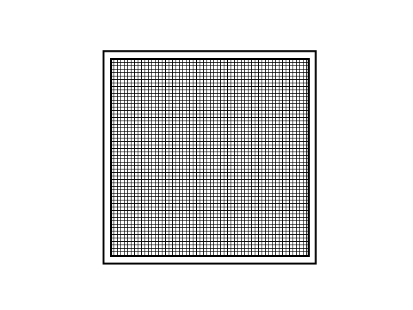
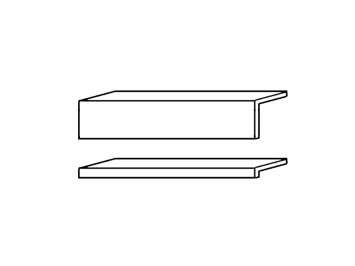
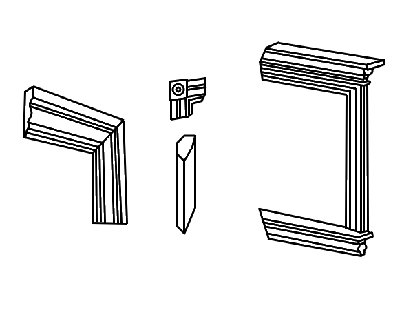
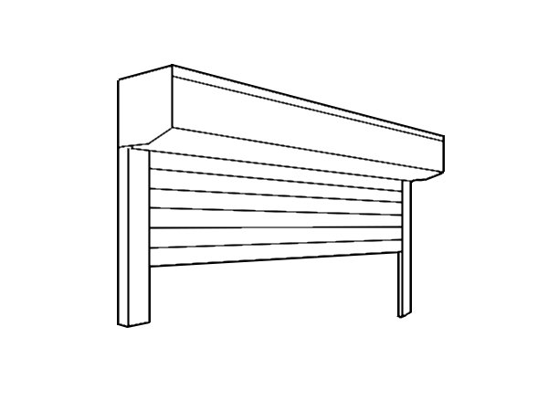

| Netts | Window boards, fascias, reveal liners | Trims, soffits, architraves | Roller blinds, venetian blinds |
|---|---|---|---|
|  |  |  |  |
Netting can be ordered to specific dimensions, and comes with a separate frame, which is then attached to the frame of a window.
Window netting can be:
Door netting can be:
Blinds can be remote controled and manual.